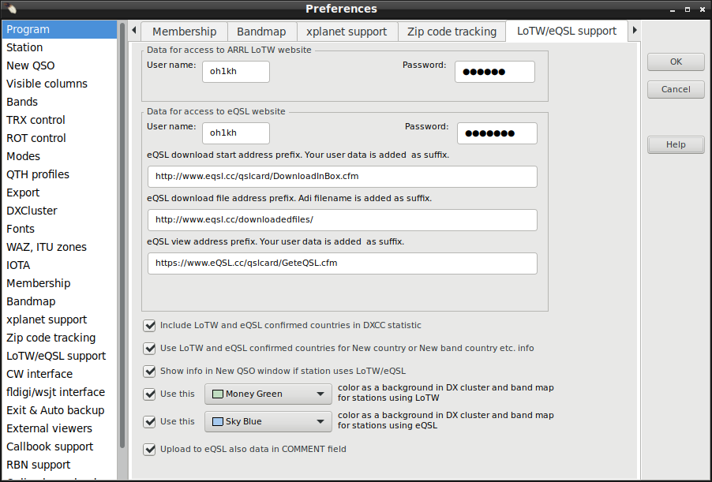
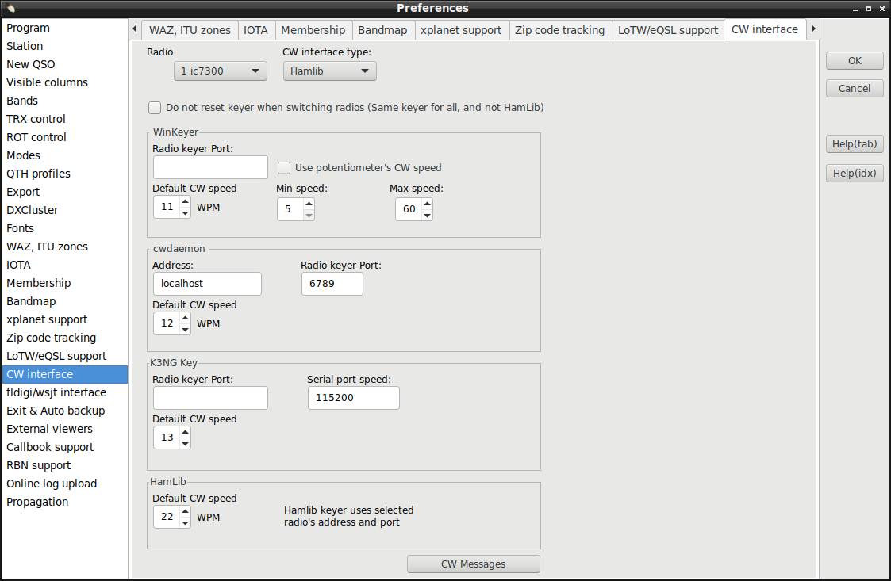
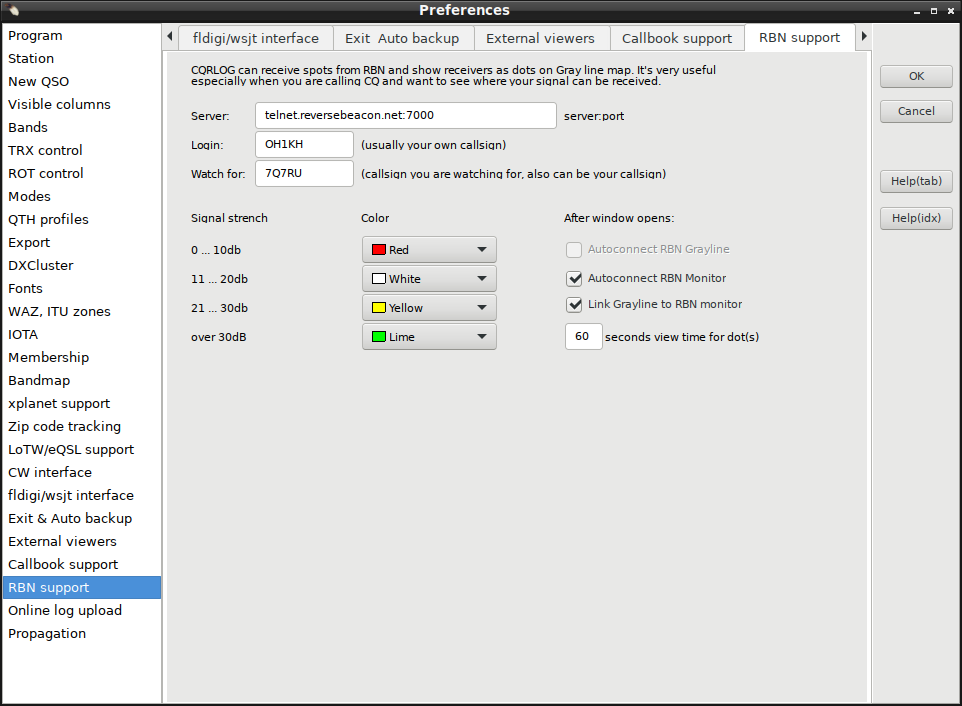

The first step you need is to set up your log preferences. From the
logging window, choose the 'File' menu item and 'Preferences' (or Ctrl-P).

A multitab window appears, allowing setup of the following parameters:
Preferences
The first tab of the 'Preferences' dialog is labelled 'Program'. Here you can setup the
main program behaviour.
Program

The
Internet connection is important to those who are behind a proxy.
The data required does not need further explanation, hopefully. CQRLOG attempts to connect
if you try to connect to the DX Cluster (either via web or telnet) and/or if you hit F6
to access the HamQTH.com/QRZ.COM callbook data.
Other settings are:
get UTC time from computer time - CQRLOG will read UTC from the system time.
If you uncheck the option, you can set the difference between UTC and your local time manually
both for sunrise/sunset and qso time.
Grayline offset - sometimes the gray line position is not accurate.
You can set your own correction.
Check for newer version of DXCC tables after program startup - if checked,
CQRLOG will check if any update of the country files is available. If a new version is found,
an update will be performed, however you are asked first if you want this update.
Check for newer version of qsl managers database after program startup - if
checked, CQRLOG will check if any update of the QSL Managers database is available. If a new
version is found, an update will be performed, however you are asked first if you want
this update.
 Show deleted countries in statistics
Show deleted countries in statistics - adds formerly valid countries
to statistics and overall DXCC counts.
Show sunrise/sunset in UTC - if checked, sunrise and sunset times are shown
in UTC, otherwise in local time. Set up the proper time difference for both grayline
and sun rise/set.
Show statistics in metres (m) or Megahertz (MHz). Selecting one of the radio
buttons affects the statistics appearing at the bottom of logging screen:

and also the headers of the main statistics (DXCC, WAZ and ITU).
Configuration storage settings - if you have one common database and several
computers with CQRLOG installed, you can choose which configuration items will be stored
only on the local computer and which will be stored in the database. Configuration stored
in the database will be common for all computers but local configuration will affect CQRLOG
on the local computer only. E.g. if you have two computers in hamshack, both are connected to
the common database. Now you can choose that TRX control, CW keying interface and position
of opened windows will be stored only to local computer.
You'll be able to have different TRX control configuration, windows postions, number of
opened windows etc. on each computer.
Enter your call, name, QTH and QRA Locator here. Remember, that the entered call is also used
as the login for the DX Cluster and is displayed on all stats exported to html. The QRA locator
is of high importance because it determines your accurate position (ie. you don't need to enter
your exact coordinates). The QRA Locator is used in beam heading and distance computation as
well as the start point of the simplified path to the other station which appears on the
grayline map.
Locator writing format is forced to "AB12cd" that follows definition https://en.wikipedia.org/wiki/Maidenhead_Locator_System#Description_of_the_system
Here are the default values for a new QSO. Remember, that if the radio interface control is
active, the default frequency does not appear on the logging screen. The preset RST values
will apppear in their corresponding boxes.
The Change default values button allows you to change the frequencies available in
the drop down menu in the NewQSO window. Very useful if you have favourite frequencies
and don't have the radio connected to the computer.
The 'Use spacebar to move between fields' is very interesting and probably the
most natural way but it works only if you are moving forwards. To move between fields,
there are two other generic possibilities (TAB key and up/down arrow keys) which
remain unaffected even if you check the spacebar option.
The 'Refresh data after save QSO' affects the data displayed in the QSO List (Ctrl-O). If checked, each
QSO appears in this list immediately after logging, however the refresh procedure is
quite slow. To save time, keep this box unchecked.
The 'Skip over mode and frequency when radio is connected' is very important if the radio control is active.
The 'Show detail window' option enables an extra window to appear at program start.
The 'Enable auto search on HamQTH.com/QRZ.COM' switches on the automated search
for HamQTH/QRZ callbook data for any worked station. This option does the same as F6 on the
logging screen, however it can be rather slow depending on the HamQTH.com/QRZ.COM server
availability.
The 'Show recent QSO records for last ** days' limits the QSO records
listed in the logging screen. Do not set the number of days too high, a high number can
cause program speed issues! The default value of 5 days is appropriate for most cases.
The instead show QSOs B4 with logged call changes recent QSO records to list of worked before list with just logged callsign.
I.E. Same list you can see while you have edited a new call, but not yet saved as logged qso. This works only, as option, if
'Show recent QSO records for last ** days' is first checked.
The In previous QSO list show also QSO with call/p etc. means you can see
previous QSO with a station even if he was active from another country with his
call/prefix. E.g. if you enter OK2CQR, you'll also see previous QSOs with him when he
was OM/OK2CQR, SP/OK2CQR etc.
The Enable satellite mode Opens second tab 'Satellte' to NewQSO/DXCC statistic view. There you can select used satellite name,
RX frequency and also propagation mode for logged qso.
This window dispays details about new/confirmed zones, IOTA details etc.
Checked columns are visible in the previous QSO list appearing at the top of the
logging screen. Except "Distance" that makes calculated distances visible at QSO list panel area.
Display of distances requires that preferences/station/locator is set and applied (automatic) to every qso and that at least 4 digit locator (when "ll" is added as 5 and 6th char) of destination station is logged.
Sometimes importing logs from other logging program may leave my locator unset. In this case QSO list/File/Group edit must be used for updating my locator field.
Checked bands are visible in both statistics appearing at the bottom of logging screen
(bands/modes of the actual logged station) and main DXCC, WAZ and ITU zones statistics.
It also affects the Challenge points at the bottom of the DXCC statistics.
Pressing button frequencies band, and mode limits within bands, can be set.
The TRX Control displays actual frequency. You can change band and mode. The radio will
change the freq/mode after you double click on a spot from dx cluster or on an item
in bandmap.
CQRLOG uses the rigctld utilty from HamLib. It controls the radio and
programs communicate with it through UDP. CQRLOG supports operating with two TRX but
only one can be active at a time.
Radio one, desc: is a description you'll see in TRX control window. It is only
descriptive text, you can write whatever you want.
Host: computer where rigctld is running, localhost is fine for most cases.
RIG model: choose your radio model from the list
Device: device which the radio is connected to. /dev/ttyS0 is COM1, /dev/ttyS1
is COM2 etc. If you use USB to serial interface, the device will usually be /dev/ttyUSB0
for COM1 etc. If you are using Ubuntu or Debian, you have to be member of the dialout users
group to have rights to the serial ports.
Poll rate: specifies how often CQRLOG should read data from rigctld. 500 milliseconds
is fine.
Port number is the number of the port used to communicate with rigctld.
Default value is 4532. The second radio, has to have a different port e.g. 4533.
Extra command line arguments usefull when you have to specify more parameters to
rigctld. E.g. CIV address (--civaddr=ID, where ID is the CIV address).
Serial port parameters from the manual of your rig, please choose the correct options.
Very often it is much better to specify only serial speed and leave other options as default.
Default value means that the settings from HamLib will be used.
Switch only between mode related memories if this option is cheched, only memories related to
current
operating mode will be used. E.g. you are on CW right now, CQRLOG will switch only between memories with CW mode.
When you switch to
USB or LSB, CQRLOG will use memories both with USB and LSB mode.
Show communication with TRX in console sometimes TRX control doesn't work. Check this option, run
CQRLOG from console and
you'll see the communication between TRX and Hamlib. This could help to find out what is wrong.
Change default frequencies
The default frequencies which the radio tunes if you click a band button in the 'TRX control'
panel can be changed to your preferences. The mode is switched in accordance to the band plan,
there is actually a separate set of default frequencies for each CW, SSB, RTTY, AM and FM modes.
Click the 'Change default frequencies' button and set up frequencies of your choice.
The first thing to be set up is the path to the xplanet binary. The default
/usr/local/bin/xplanet
is OK in most cases for installation from sources,
the usual path for installation from precompiled packages is
/usr/bin/xplanet
Adjust the
window size (remember to set up a square, ie. 400x400,
300x300 etc. to avoid strange effects). Also, the
window position
must be set up to create a nice looking screen. Use the
Test it!
button to see how your settings affect the resulting screen.
Xplanet can refresh its display at a preset interval. This is very useful because it
can read the spot (entry) list and update the displayed data. To avoid a 'flooded',
unreadable window, the number of displayed spots/entries must be limited. It seems
that 20 is the maximum to keep the display garbage away. Actually, the number of
spots (entries) is not limited by the program but by the readability. If you change
the number of spots to be displayed or if the spots should (should not) be sent to
xplanet, restart the program. Remember that a program restart will be needed to
make the changes take effect!
Set up the source (DX Cluster, Band map) by checking the appropriate radio button
in the '
Show stations from' section. The '
Projection'
has 3 options:
- 3D - shows the globe as viewed from space. This rendering
type without any projection is very nice, however the very distant points will not be
visible, also spots or band map entries of distant DX locations will disappear.
Angles should be true because the globe is 'centered' on your location. Distances
are not true because of the lack of projection. This eye candy is
therefore good for those who do not work DX stations.
- Azimuthal - is the usual directional map which you will find
useful for any rotator indication. Both angles and distances are true, however the
continent patterns may look a bit strange to those who are not very accustomed
to this projection. The azimuthal projection is the best for a DXer.
- Azimuthal without background - is the same as above but the
background which contains the angle (polar) scale is not rendered. It is an
'emergency' solution which is useful if you have not enough space to set up
the main xplanet window as a square.
The center locator for the xplanet window can be customized by configuring in on
this page. In case the field is empty the default locator of the station is used.
If you want to have your own position displayed within xplanet check the
Show own
position within xplanet checkbox.
this page. In case the field is empty the default locator of the station is used.
The xplanet window currently has no other function than to display spots or band
map entries in the azimuthal projection or 3D-like picture.
Zip code tracking

Zip code tracking allows you to determine states, counties, provinces and other
geographical details if the postal zip code structure allows such operations. The zip
code itself is retrieved from the callbook address. The database is located in
the /zipcodes folder. If set up properly, the F6 key is used to determine US state,
US county and Italian province.
Setup: The database must be loaded before use and the target (field)
must be specified. Also, the position of the zip code (line begin or end) must be set
up.
LoTW/eQSL support

Provide your user name for eQSL/LoTW and the password (this is
not
the password sent to US amateurs via postcard!). Choose if you want to include LoTW
confirmation in the statistics and
New country and
New band country
info messages.
Normally you do not need to touch eQSL addresses. But in case something changes at eQSL web pages it might be possible to fix it here without rebuilding cqrlog program.
CW interface

Choose your preferred CW interface. There are 5 options: None, WinKeyer USB,
cwdaemon, K3NG keyer and HamLib. We strongly recommend Winkey USB by Steve Elliot, K1EL,
which provides 'all in one' keying, including one of most advanced paddle keyers available.
cwdaemon should be seen as a backup option with many limitations, which may need
a custom linux kernel to avoid sloppy CW at speeds above 25 WPM. If cwdaemon is used,
only keyboard keying is possible.
Detailed setup of the CW devices is here:
For further steps (CW messages edit, keyboard keyer operation) - click
here.
fldigi interface
First,
fldigi must be installed and functional.
Preferences must be set up to operate with fldigi. Set up the path to fldigi, and if you wish
to start it when CQRLOG switches to remote mode. Other parameters including the way that
the CQRLOG - fldigi combo should handle the frequency, mode and RST. CQRLOG also loads
the fldigi contents to keep the data, so the 'polling' period should be set up.
The 2 seconds interval is a very acceptable default.
The way the CQRLOG - fldigi combo handles the frequency, mode and RST is rather important.
Keep in mind that CQRLOG operates in remote mode which means that the logger is offline
and therefore does not display the actual frequency and mode on the logging screen. If
you properly set up the
fldigi mode and frequency control, both are correctly
displayed in the
fldigi window.
Choose the fldigi option in
Frequency from,
Mode from and
RST from boxes and you don't
need to watch the logger, except the QSO list in the upper portion of the logging screen.
When logging/saving a contact, frequency, mode and RST should appear correctly in this QSO list.
If you choose the CQRLOG option, you must set the mode in CQRLOG which seems less sensible.
See also:
Using fldigi withXmlRpc remote mode

wsjt-x interface
Setting wsjt-x interface is mainly same as setting fldigi. How ever communication is done via UDP frames and so the IP address and Port must be specified.
Default values are
127.0.0.1 or
localhost for address and
2237 for port. These are set in wsjt-x settings/reporting and if changed there, must also to be changed here.
Address can also be other PC's IP address if wsjt-x is running in different networked PC than cqrlog, or even 0.0.0.0 when cqrlog listens all transmits from every wsjt-x in network.
Using
WB4 chk starts from it is possible to limit log search starting from given date for callsign and/or locator.
Setting checkbox will apply given date as start date. Otherwise, when unchecked, whole log is searched through.
These limits will affect to callsign and/or locator coloring in wsjt-x monitor and worked grids map summary counts and grid painting.
WB4 can be handy when working
ARRL International Grid Chase or
ARRL RTTY-FT8 like contests if one does not like to create separate log for that purpose.

Pressing calendar icon is easy way to set date. Double click on selected date closes calendar and sets the date. Pressing ESC closes calendar, but does not set date. Date can also be typed in manually.
N1MM interface
Setting of N1MM interface is similar as wsjt-x interface. Only IP address and PORT have to be set if they are not defaults.
Default values are
127.0.0.1 or
localhost for address and
2333 for port. These are set in wsjt-x, or js8call, settings/reporting and if changed there, must also to be changed here.
Address can also be other PC's IP address if wsjt-x is running in different networked PC than cqrlog, or even 0.0.0.0 when cqrlog listens all transmits from every wsjt-x in network.
At WSJT-X 2.1.0 settings N1MM remote is renamed to "Secondary UDP server (deprecated)" and it is reported to be removed completely in future. Because of that it is now possible to set cqrlog's N1MM port to wsjt-x UDP server port number. WSJT-X 2.1.x UDP frames contain message #12 that
includes log information in ADIF format and N1MM remote can now parse that from binary data if you do not like to have monitoring properties (using wsjt remote) but want just qso logging (using N1MM remote).
N1MM remote has now better support for QRZ/HamQTH info fetch. If this is not allowed in preferences, or if there is no reponse from Web max waiting time (timeout) is 5 seconds (You can not remove this property, so be patient. You can not have new qso for logging during 5 seconds!).
While having qso you can write some notes like Name, QTH, Comment to QSO, etc. to NewQSO and it will saved with qso data during next wsjt-x "log qso/OK" event. They will not be overwritten by possible Qrz/HamQth info.
NOTE !! Wstx- does not send contest -name, -number and -string in ADIF logging datagram. Contest exchanges are placed to regular rst_s and rst_r strings. So cqrlog can not fill proper contest columns when logging is done with ADIF datagram using N1MM remote.
Exit & Auto backup
To increase the safety of your log data, CQRLOG is equipped with an
Auto backup
option which allows you to export (ADIF) and store the log data in a safe location.
The ADIF format was choosen because of its text format. The output file can be compressed
in tar.gz format.

Of course, the export and compression takes some time, depending on the log size (QSO count).
If you are not in a hurry, allow the program 2-3 minutes to perform this safety measure.
We reccomend you backup your log to your hard drive from there it should be copied to
other media (your server, USB flash, a memory card etc.).
Distances are not exported in backup phase. So do not expect to find them from backup file.

Check both "Enable autobackup after program ends" and "Ask before creating a backup" to prevent closing cqrlog accidently. Answering
"Cancel" to question returns to NewQso without backup.
External viewers
Set up the viewers used for browsing the notes related to a particular callsign.
The notes in the call_data subfolder can contain text, html, pdf and image files.
To enable reading of all file types, corresponding viewers must be set up properly,
ie. must be in the system path.
Callbook support
CQRLOG supports
HamQTH and
QRZ.com
callbooks but only access through the XML interace is supported. HamQTH has a free interface,
for QRZ.com you have to pay an annual fee.

RBN support
CQRLOG can receive spots from RBN and show them on the Gray line map. It's very nice to
see where your signal has been decoded especially when you are calling CQ on an empty band.

Login: - your user name to log in to RBN. It's usually your own callsign.
Watch for: the callsign you are watching for, also usually your own callsign.
If you leave this field empty, every spot will be shown on the grayline map.
Auto connect after open the log - check this option if you want to autoconnect
to RBN when the program starts, you won't have to worry about it and CQRLOG will do
it for you automatically.
Signal strength How strong you are will be clear very quickly when you look
at the map with the dots in different colours. Which colour will be used can be set here.
Delete old information after XX seconds The dots won't stay on the map forever.
180 seconds (3 minutes) is a good default value. Please note, it also depends on the band,
if you change band, dots will always be deleted. All data is band related.
Online log upload support
CQRLOG supports online log upload to
HamQTH,
ClubLog.org and
HRDLOG.net

Both ClubLog and HamQTH need a username and password, Clublog also needs the email address
used when you registered. HRDLog.net needs only user name and the code you got by e-mail.
You can set different color for each service. This color will be used for status messages
which will inform you about upload progress.
Upload QSO data immediately after save, update or delete means that every
insert/update or delete will be uploaded automatically. But if you change something in
QSO list window with hot keys e.g. CTRL+S, CTRL+W etc. and/or download data
from eQSL/LoTW, changes won't be uploaded. All will be uploaded after you save/delete QSO
or if you choose Online log and Upload to all online logs menu.
How to get it to work?
- check if you have set correct username, password (email, Code)
- export all data from the log to ADIF file
- import this adif file to the website of online log you are going to use
(if you are using HamQTH, please wait untill the email about a successful import arrives)
- open QSO list window, click to Online log menu and choose
Mark QSO as uploaded to all logs, CQRLOG marks all QSO as uploaded
That's all, Now if you insert/edit or delete a QSO, it will also be uploaded to the online log.
Close the "Status of log upload" window after successful upload
if you don't want to have Log upload status window visible, check this option and
windows will be closed after upload to online log is finished.
Ignore changes caused by LoTW/eQSL upload or download - every change of
a qso will cause a new upload to the online log database. Sometimes it can be useful to
have the opportunity to disable it when upload/download data to LoTW/eQSL. These changes
won't be logged and QSO won't be uploaded to any online log.